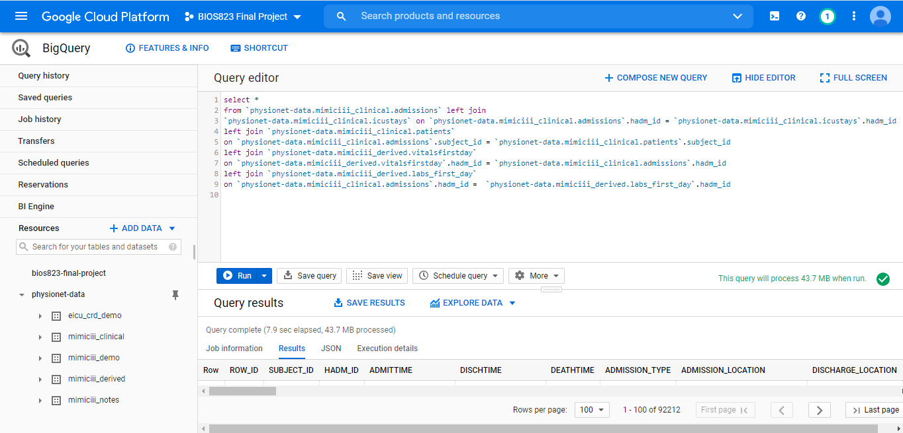
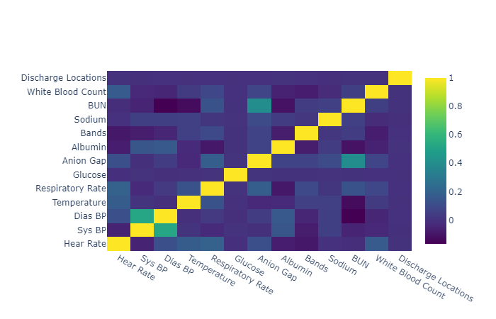
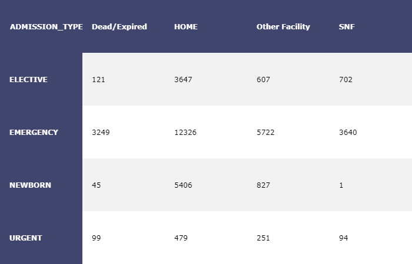
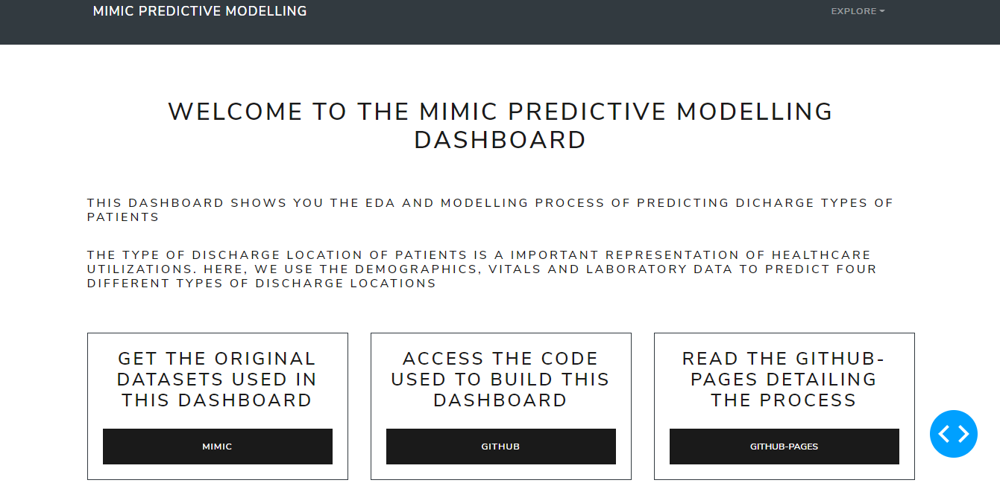
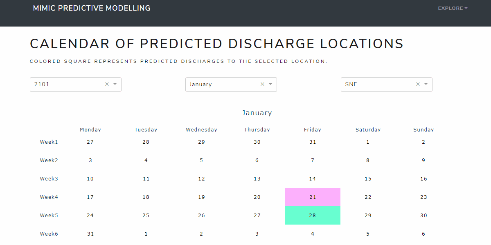

My responsibilities in the team are
- Querying and merging raw data from google big query.
- Performing exploratory data analysis and developing baseline models as benchmark (cooperating with Heather Qiu).
- Building Gradient Boosting Model and Adaptive Boosting Model and performing hyperparameter tuning.
- Designing dashboard overall layout, specifically the home page, the EDA page (cooperating with Mengyue Han), the calendar page.
- Deploy the dashboard to google cloud platform.
Learning Techniques:
- Serverless Cloud Platform (BigQuery, command line tool, dash deployment)
- Preprocessing packages: pandas, missingno
- Machine Learning Techniques: xgboost, optuna, sklearn
- Dashboard Design: dash, plotly
Dashboard: https://bios823-mimic-dashboard.ue.r.appspot.com/
Background
After the outbreak of COVID-19, we are facing shortage of key hospital utilizations all around the world. Thus, accurate prediction on healthcare resources is or urgent need more than ever. However, care managers cannot make precise predictions on these resources manually so here's where the data mining techniques could help.
The discharge location, especially those who are discharged to skilled nursing facilities and other hospitals, is an important indicator of cost of care and hospital utilizations. Thus, we will develop a model to classify and predict discharge locations and further provide information to aid care managers in allocating key healthcare utilizations.
The research question is to predict discharge location at the individual level. The audience of this project is care managers and clinicians who need information to allocate key hospital resources and manage hospital capacity.
The specific research aims are
- Predicting the discharge locations of each patient accurately based on electronic health records
- Identifying the important variables associated with the discharge locations
- Displaying the model development and predictions on dashboard and deploying the model on google cloud platform
Exploratory Data Anlysis
This section includes the querying process of raw dataset and exploratory data analysis, such as imputation of missingness and encoding of categorical variables.
Querying and Merging Raw Dataset
We extracted a total of 46,520 observations from MIMIC database comprising of patients admitted to intensive care units from June 2001-October 2012. Only the first record of ICU stay was kept if a patient had multiple ICU stay records. The predictors comprised of demographics data, vital signs, and laboratory test results. The following are data preprocessing steps
- Extracting the mean, max and min of the vital signs recorded by Metavision or CareVue on the first day of admission for each observation, such as heart rate, glucose and respiratory rate from table
INPUTEVENTS_CVandINPUTEVENTS_MV. The definition of all items are retrieved from tabled_items. - Combining tables
ADMISSIONS,ICUSTAYS,PATIENTSto get demographics data, such as age, admission type, religion, and ethnicity. - Note: This dataset was deidentified so the age of patients older than 89-years-old was transformed to arbitrarily large numbers. Here, we reset all the age of patients older than 89 to 89 years old.
- Note: the admission time was also transformed to avoid data users identifying patients.
- Extracting the laboratory test results from the table
LABEVENTStable on the first dat of admission for each observation, such as white blood count and blood urea nitrogen test.

Target Variables
This figure shows a comparison of the target variable in the raw data and processed data. We combined patients discharged to home, home health care and other locations which would consume very limited resources together and combined all other facilities, such as short term hospitals and long term hospitals, to one group which would consume a large amount of resources.
Numerical Varibles
All the numerical variables were imputed by single imputation. We attempted to apply iterative imputation but this algorithm couldn't converge on this dataset. The variables with >50% missingness were removed. This figure demonstrates the correlation between target variables and some selected numerical variables. Most of the numerical variables are not highly linearly correlated with the outcome variables.

Categorical Variables
We applied one-hot-encoding to the categorical variables and removed the levels with less frequent occurrences. For example, we only kept 9 diagnoses among more than 10,000 different diagnosis since most of these diagnosis were consisted of less than 1% of the sample.
We used cross tables to observe the association between these variables and the target variables. For example, the patients admitted urgently are more likely to die in hospital compared to admitted electively which is consistent to our knowledge. New born are almost impossible to be discharged to skilled nursing facility.

Development of Predictive Modeling
Dummy classifier and logistic regression were applied as baseline method and four different machine learning algorithms were applied to attempt to improve predictive ability. The performance of these methods are shown in this table.
| Accuracy | F1 (Weighted) | Recall (SNF) | Recall (OTHERS) | |
|---|---|---|---|---|
| Dummy Classifier | 0.59 | 0.43 | 0 | 0 |
| Logistic Regression | 0.65 | 0.59 | 0.26 | 0.16 |
| KNN | 0.60 | 0.53 | 0.20 | 0.14 |
| SVM | 0.66 | 0.62 | 0.29 | 0.22 |
| Random Forest | 0.68 | 0.64 | 0.30 | 0.29 |
| Gradient Boosting | 0.68 | 0.66 | 0.34 | 0.32 |
Gradient Boosting beats all the other models based on all the evaluation metrics. The patients discharged to skilled nursing facility and other hospital facilities will consume more hospital utilizations so we focus on the predictive accuracy on these two groups. Here, let's talk about how to build a gradient boosting model by python.
Mechanisms of Gradient Boosting
The two main components of gradient boosting are decision tree ensembles and additive learning. The tree ensemble model sums the prediction of multiple trees together which complements the shortage of high variance of a single decision tree. In other words, it combines a set of weak learners to become a strong learner. The objective of gradient boosting is to minimize the loss of the model by adding weaking learners using a gradient descent procedure. Every new weak learner aims to reduce the residual loss and the previous trees remains unchanged. Since the new weak learner focuses on residual loss, it is possibly the reason it performs best on our imbalanced dataset.
Hyperparameter Tuning
The objective of hyperparameter tuning is to improve the predictive ability of our model and control overfitting problem. The two most important parameters in gradient boosting are learning rate and number of rounds. Another three different parameters can control overfitting:
- Maximum depth
- Minimum child weight
- Gamma
First, let's try control overfitting by setting maximum depth of trees. We need to set a range for every hyperparameter. The learning rate is between 0.01-0.5 and the number of rounds is set to between 2-1000. If we set learning rate to be smaller, the numer of rounds need to be increased. Here, the objective is set to be multi:softmax since the target variable is a multi-level categorical variables.
import xgboost as xgb
class Objective(object):
def __init__(self, X, y):
self.X = X
self.y = y
def __call__(self, trial):
X, y = self.X, self.y # load data once only
learning_rate = trial.suggest_float('learning_rate', 0.01,0.5)
colsample_bytree = trial.suggest_float('colsample_bytree', 0.2, 1)
n_estimators = trial.suggest_int('n_estimators', 2, 1000, log=True)
max_depth = trial.suggest_int('max_depth', 1, 10)
clf = xgb.XGBClassifier(
objective='multi:softmax',
learning_rate=learning_rate,
n_estimators = n_estimators,
max_depth = max_depth,
colsample_bytree = colsample_bytree,
random_state = 123
)
score = cross_val_score(clf, X, y, n_jobs=-1, cv=5).mean()
return score
The overall accuracy of the 5-fold cross validation was the evaluation metrics in the hyperparameter tuning process. The best value of 200 rounds of trials was 0.69 which was the highest overall accuracy compared to other models. However, this model was also facing the overfitting problem. The accuracy on the training dataset was 0.85.
Thus, let's try another parameter to control overfitting--gamma. Gamma is the minimum loss reduction required to make a further partition on a leaf node of the tree. The larger gamma is, the more conservative the algorithms will be. [1] In other words, the larger the gamma is, the less likely the algorithms will be overfitting.
| Training Accuracy | Testing Accuracy | |
|---|---|---|
| Gradient Boosting-Max Depth | 0.85 | 0.69 |
| Gradient Boosting-Gamma | 0.77 | 0.68 |
| Adaptive Boosting | 0.67 | 0.66 |
Although testing accuracy decreased 1% if we controlled overfitting by gamma, the training accuracy decreased for 8% which indicated the overfitting problem was solved to some degree. We also tried AdaBoosting but the gradient boosting beated the AdaBoosting in terms of testing accuracy.
Dashboard Design
After building the predictive model, we decided to show the overall process of development of the model and prediction of the model to a dashboard. Here, we use dash package to make our dashboard.

There are five parts of this dashboard:
- Home page: links to dataset, github repository and github pages
- EDA page: visualization of original dataset
-
Modelling page: comparison of different models and identification of important variables
-
Calendar page: prediction results displayed to care managers
- Online ML deployment: interactive prediction page
Multi-page Design
Based on the design of the content, the multi-page layout fits the best. The key step of multi-page dashboard is the file directory.
-- app.py
--index.py
--apps
--home.py
--EDA.py
--Models.py
--calendar.py
--deploy.py
The app.py creates the server and style of the dashboard. Other files will import the app object from app.py.
import dash
import dash_bootstrap_components as dbc
# bootstrap theme
# https://bootswatch.com/lux/
external_stylesheets = [dbc.themes.LUX]
app = dash.Dash(__name__, external_stylesheets=external_stylesheets, suppress_callback_exceptions=True)
server = app.server
The index.py creates navigation bar to switch between each page and builds the path to each page.
- Import all pages in the app from apps directory
- Building the navigation bar
- Creating the dropdown menu
- Combining the head of navigation bar and the dropdown menu
- Creating the layout design
- Putting the navigation bar as the header
- Writing a call back function to switch between different pages
import dash_core_components as dcc
import dash_html_components as html
from dash.dependencies import Input, Output, State
import dash_bootstrap_components as dbc
import dash
from app import app, server
# import all pages in the app
from apps import home, EDA, calendar, Models, deploy_app
# building the navigation bar
# https://github.com/facultyai/dash-bootstrap-components/blob/master/examples/advanced-component-usage/Navbars.py
dropdown = dbc.DropdownMenu(
children=[
dbc.DropdownMenuItem("Home",
href="/haha"
),
dbc.DropdownMenuItem("EDA",
href="/EDA"
),
dbc.DropdownMenuItem("Models",
href="/Models"
),
dbc.DropdownMenuItem("Calendar",
href="/calendar"
),
dbc.DropdownMenuItem("Online ML",
href="/deploy_app"
)
],
nav = True,
in_navbar = True,
label = "Explore",
)
navbar = dbc.Navbar(
dbc.Container(
[
html.A(
dbc.Row(
[
dbc.Col(dbc.NavbarBrand("MIMIC Predictive Modelling", className="ml-2")),
],
align="center",
no_gutters=True,
),
href="/home",
),
dbc.NavbarToggler(id="navbar-toggler2"),
dbc.Collapse(
dbc.Nav(
# right align dropdown menu with ml-auto className
[dropdown], className="ml-auto", navbar=True
),
id="navbar-collapse2",
navbar=True,
),
]
),
color="dark",
dark=True,
className="mb-4",
)
# embedding the navigation bar
app.layout = html.Div([
dcc.Location(id='url', refresh=False),
navbar,
html.Div(id='page-content')
])
# controlling which page to display
@app.callback(Output('page-content', 'children'),
[Input('url', 'pathname')])
def display_page(pathname):
if pathname == '/EDA':
return EDA.layout
elif pathname == '/Models':
return Models.layout
elif pathname == '/calendar':
return calendar.layout
elif pathname == '/deploy_app':
return deploy_app.layout
else:
return home.layout
if __name__ == '__main__':
app.run_server(debug=True)
Calendar Page
The calendar page is deigned for users who have no knowledge of machine learning algorithms. The prediction is based on the data collected at the admission stage (or the first day of admission). Care managers can see the predicted discharge locations directly in terms of time series. For example, on 2101 Januray, three patients are expected to be discharged to skilled nursing facilities.

Deployment to Google Cloud Platform
Our final step is to deploy the dashboard to google cloud platform so that everyone can see the results of our model. We only need three steps before closing our project!
Step 1: Set up your Google Cloud Platform Project
-
Install GCP SDK tools
-
Create a new project by selecting option [3] and choose the correct region
-
Check if your project is active using:
bash
$ gcloud config get-value project
bios823-mimic-dashboard
Step 2: Set up the Project Folder
- Ensure you import server from app.py to index.py
from app import app, server
- Create the app.yaml file
``` service: default runtime: python37 instance_class: F4_HIGHMEM
entrypoint: gunicorn -b :$PORT index:server --timeout 120 ```
This is the most important file of the deployment of the dashboard to GCP.
- Runtime: The name of the runtime environment that is used by your app. Here, I use python 3.7 as the runtime environment.
- instance_class: The instance class for this service.
Here I tell gunicorn to search for server from index.py so that's why it's important to import server in index.py. This version of gunicorn cannot understand the structure of python data, so it would not get attribute of app if you don't instantiate it.
-
Creating requirements.txt to specify the packages you need
-
The first method is use pip freeze
$ pip freeze > requirements.txt -
Or you can write it manually.
Step 3: Deploying the model to google cloud
- Uploading and deploying all your files
$ gcloud app deploy
Note: if your get an error: Access not Configured. You just need to follow the link in the error message and enable the service.
- Viewing your dashboard
$ gcloud app browse
References
- https://xgboost.readthedocs.io/en/latest/
- https://towardsdatascience.com/beginners-guide-to-building-a-multi-page-dashboard-using-dash-5d06dbfc7599
- https://datasciencecampus.github.io/deploy-dash-with-gcp/
- https://cloud.google.com/appengine/docs/standard/python/config/appref